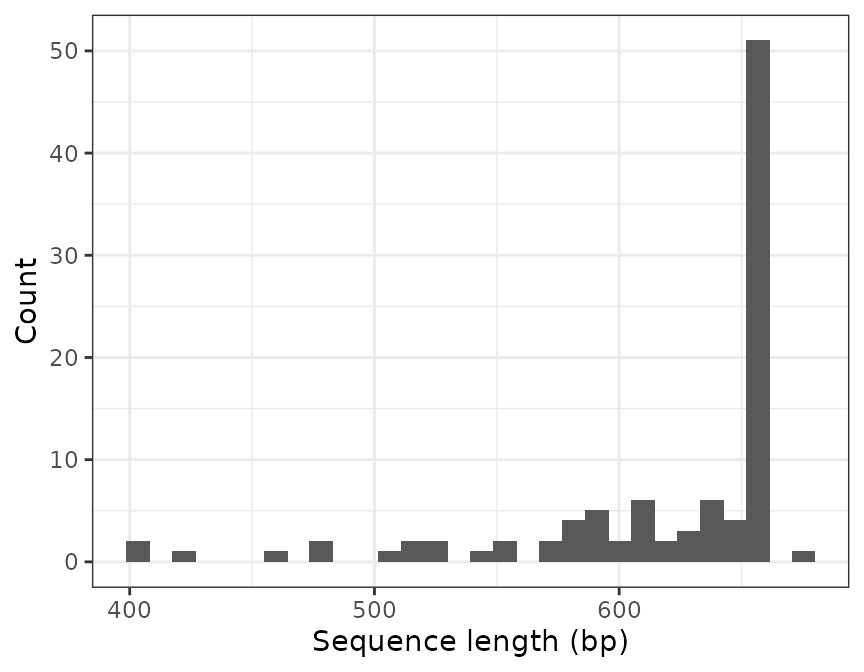
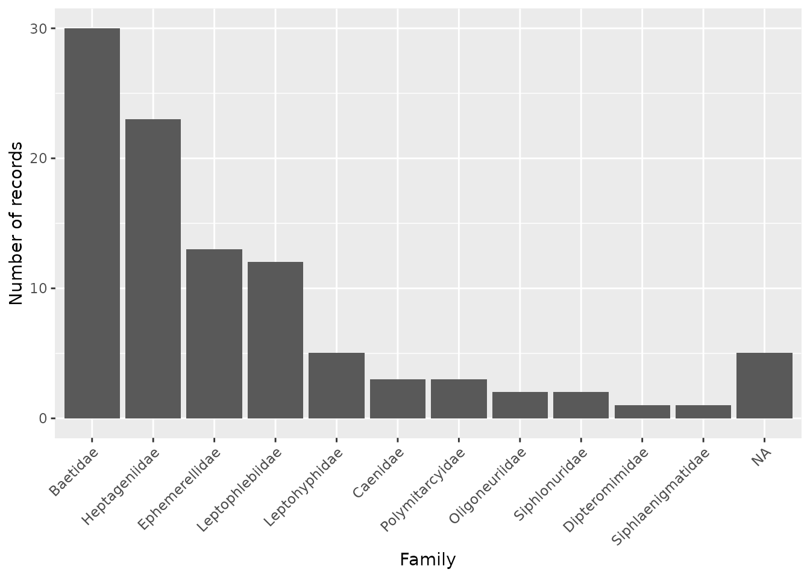
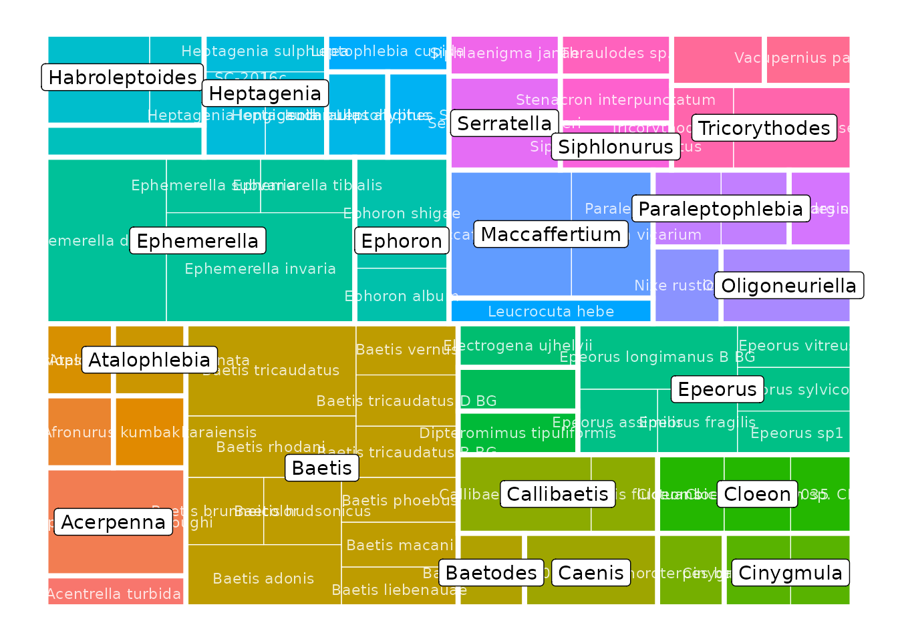
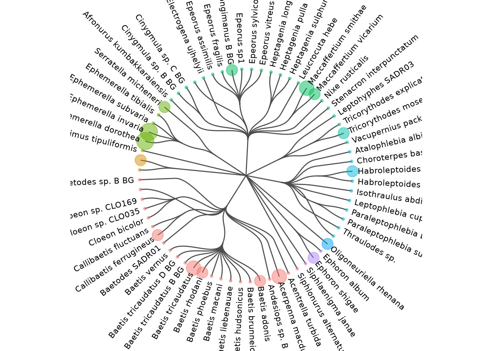

Developing and maintaining a DNA reference database can be difficult. The refdb package has been developed to assist you during the different steps of the process. This vignette will present some of the important functions of the package and help you to get started with it.
The refdb package is available on CRAN which means that you can easily install the latest stable version using the RStudio IDE or with the function install.packages. In this tutorial we will also be using functions from several packages of the tidyverse. Therefore, if the tidyverse package is not already installed on your computer, you are encouraged to install it now.
Once everything is ready, we can start by loading the packages we need:
library(refdb)
library(readr)
library(ggplot2)
library(dplyr)
#>
#> Attaching package: 'dplyr'
#> The following objects are masked from 'package:stats':
#>
#> filter, lag
#> The following objects are masked from 'package:base':
#>
#> intersect, setdiff, setequal, union
library(forcats)In refdb, a reference database is a simple dataframe. This means that any functions able to read external data and return a dataframe in your R environment can be used to import a reference library. Here, for simplicity, we will assume the reference database is stored as a CSV on the disk. You can download this file here (use “Save as”). Then, we can read the file from its location on your computer with:
lib <- read_csv("my_path/ephem.csv")Note that we use the function read_csv from tidyverse which returns a tibble. A tibble is a dataframe with some extra refinements. There is no issue with using tibbles with refdb functions (this is actually encouraged).
Now we have a dataframe (a tibble) in our environment. However, the functions of the refdb package can do nothing from it because they need to know what is the actual content stored in each column. You have to provide this information, and this can be done using the function refdb_set_fields.
lib <- refdb_set_fields(lib,
taxonomy = c(family = "family_name",
genus = "genus_name",
species = "species_name"),
sequence = "DNA_seq",
marker = "marker")Here we explicitly set the taxonomy, sequence and marker fields by indicating which columns of the dataframe correspond to each of those fields.
If you print the object lib now, you will see that the nucleotide symbols in the columns DNA_seq are colored. This is because this column has been identified as containing DNA sequences. A simple way to see which fields have been associated with which column is simply to use the function refdb_get_fields.
refdb_get_fields(lib)
#> taxonomy:
#> family: family_name
#> genus: genus_name
#> species: species_name
#> sequence: DNA_seq
#> marker: markerNote that if you are importing data from some popular reference databases, these functions can save you time: refdb_set_fields_BOLD, refdb_set_fields_NCBI, refdb_set_fields_PR2, refdb_set_fields_diatbarcode.
Now that the data are loaded and the fields have been set, we can start to work with the reference database. The first thing we will look at, is how to clean taxonomic names and DNA sequences. Cleaning is different than filtering (that we will see in the next section) in that the objective here is not to remove entries but to improve them.
Both sequences and taxonomic names can be affected by countless problems that would be impossible to list here. However, the refdb package provides functions to deal with many of the common cases. Let’s review some of them.
Let’s take a look at the taxonomy of the 91st record:
lib [91, 1:4]
#> # A tibble: 1 x 4
#> order_name family_name genus_name species_name
#> <chr> <chr> <chr> <chr>
#> 1 Ephemeroptera Leptophlebiidae Thraulodes Thraulodes sp.Here, the specimen has been identified at the genus level and the species is reported using the notation “sp.”. This is a common notation but not really a practical one when you manage a database. How would you report the family of an organism identified at the class level? In R, a general and efficient way to code for a missing information is simply to use the built-in NA indicator.
The function refdb_clean_tax_NA can be used to identify taxonomic levels for which there are no information and change them to NA.
lib_na <- refdb_clean_tax_NA(lib)
lib_na [91, 1:4]
#> # A tibble: 1 x 4
#> order_name family_name genus_name species_name
#> <chr> <chr> <chr> <chr>
#> 1 Ephemeroptera Leptophlebiidae Thraulodes <NA>It is common to find taxonomic names to which various information have been added. See the 32nd row of our database:
lib [32, 1:4]
#> # A tibble: 1 x 4
#> order_name family_name genus_name species_name
#> <chr> <chr> <chr> <chr>
#> 1 Ephemeroptera Heptageniidae Epeorus Epeorus longimanus B BGThe species name is tagged “B BG” which probably meant something to the person who recorded this entry but is not useful to us and may even be problematic. The function refdb_clean_tax_remove_extra uses some simple rules to detect these information and remove them.
lib_na_extra <- refdb_clean_tax_remove_extra(lib_na)
lib_na_extra [32, 1:4]
#> # A tibble: 1 x 4
#> order_name family_name genus_name species_name
#> <chr> <chr> <chr> <chr>
#> 1 Ephemeroptera Heptageniidae Epeorus Epeorus longimanusThe cleaning functions of refdb uses several rules and heuristics, some of them can produce false positive and negative. You should always be careful and if you find cases where a function does not what it is expected to do, please report here.
Similarly it is possible to clean the sequences with different functions. For example, if we want to remove the gaps in the sequences:
head(lib)
#> # A tibble: 6 x 8
#> order_name family_name genus_name species_name marker DNA_seq lat lon
#> <chr> <chr> <chr> <chr> <chr> <DNA> <dbl> <dbl>
#> 1 Ephemeropt… Heptagenii… Epeorus Epeorus fra… COI-5P ATAGTCGGA… 39.5 -79.2
#> 2 Ephemeropt… Oligoneuri… Oligoneur… Oligoneurie… COI-5P GACTTTATA… 42.4 22.5
#> 3 Ephemeropt… Ephemerell… Serratella Serratella … COI-5P ---------… 34.2 -118.
#> 4 Ephemeropt… Baetidae Fallceon <NA> COI-5P ---------… 34.2 -119.
#> 5 Ephemeropt… Heptagenii… Heptagenia Heptagenia … COI-5P AACTTTATA… 58.7 -94.2
#> 6 Ephemeropt… Heptagenii… Epeorus Epeorus vit… COI-5P AACTCTATA… 46.8 -66.1
lib_nogap <- refdb_clean_seq_remove_gaps(lib)
head(lib_nogap)
#> # A tibble: 6 x 8
#> order_name family_name genus_name species_name marker DNA_seq lat lon
#> <chr> <chr> <chr> <chr> <chr> <DNA> <dbl> <dbl>
#> 1 Ephemeropt… Heptagenii… Epeorus Epeorus fra… COI-5P ATAGTCGGA… 39.5 -79.2
#> 2 Ephemeropt… Oligoneuri… Oligoneur… Oligoneurie… COI-5P GACTTTATA… 42.4 22.5
#> 3 Ephemeropt… Ephemerell… Serratella Serratella … COI-5P TGAGTTTTT… 34.2 -118.
#> 4 Ephemeropt… Baetidae Fallceon <NA> COI-5P TAAGATTTT… 34.2 -119.
#> 5 Ephemeropt… Heptagenii… Heptagenia Heptagenia … COI-5P AACTTTATA… 58.7 -94.2
#> 6 Ephemeropt… Heptagenii… Epeorus Epeorus vit… COI-5P AACTCTATA… 46.8 -66.1We have only seen a brief overview of the functions available for cleaning up the sequences and their associated taxonomy. It would be tedious to list all the functions and their options here. Instead, the table below summarises the functions currently available in refdb.
| Function | Description |
|---|---|
| refdb_clean_seq_remove_gaps | Remove gaps from genetic sequences |
| refdb_clean_seq_remove_sideN | Remove repeated side N from genetic sequences |
| refdb_clean_seq_crop_primers | Crop genetic sequences with a set of primers |
| refdb_clean_tax_remove_blank | Remove blank characters from taxonomic names |
| refdb_clean_tax_remove_extra | Remove extra words from taxonomic names |
| refdb_clean_tax_harmonize_nomenclature | Harmonize taxonomic name nomenclature |
| refdb_clean_tax_remove_uncertainty | Remove terms indicating uncertainty in taxonomic names |
| refdb_clean_tax_remove_subsp | Remove subspecific information from taxonomic names |
| refdb_clean_tax_NA | Convert missing taxonomic names to NA |
Filtering is the step that usually follows cleaning and whose objective is to identify and remove records (rows) which do not satisfy quality criteria (those criteria and associated thresholds are of course specific to each project).
For example we may want to exclude very short sequences whose length is likely shorter than the targeted genetic marker. Let’s take a look at the distribution of sequence lengths in the database:
refdb_plot_seqlen_hist(lib)
#> `stat_bin()` using `bins = 30`. Pick better value with `binwidth`.
To exclude all the sequences shorter than 500 nucleotides we use the function refdb_filter_seq_length.
lib_long <- refdb_filter_seq_length(lib, min_len = 500)
nrow(lib)
#> [1] 100
nrow(lib_long)
#> [1] 94The function has removed 6 records.
Another, more sophisticated filtering function is refdb_filter_seq_primer() which can find sequences which do not contain a motif (typically a primer sequence) and remove them from the reference database
For example, a commonly used forward primer for metazoan is the mlCOIintF (Leray 2013). I we want to keep only the sequences where this primer is found we can use:
refdb_filter_seq_primer(lib, primer_forward = "GGWACWGGWTGAACWGTWTAYCCYCC")
#> # A tibble: 76 x 8
#> order_name family_name genus_name species_name marker DNA_seq lat lon
#> <chr> <chr> <chr> <chr> <chr> <DNA> <dbl> <dbl>
#> 1 Ephemeropt… Oligoneuri… Oligoneur… Oligoneurie… COI-5P GACTTTAT… 42.4 22.5
#> 2 Ephemeropt… Ephemerell… Serratella Serratella … COI-5P --------… 34.2 -118.
#> 3 Ephemeropt… Baetidae Fallceon <NA> COI-5P --------… 34.2 -119.
#> 4 Ephemeropt… Heptagenii… Heptagenia Heptagenia … COI-5P AACTTTAT… 58.7 -94.2
#> 5 Ephemeropt… Heptagenii… Epeorus Epeorus vit… COI-5P AACTCTAT… 46.8 -66.1
#> 6 Ephemeropt… Ephemerell… Ephemerel… Ephemerella… COI-5P AACTTTAT… 46.0 -66.7
#> 7 Ephemeropt… Baetidae Baetis Baetis huds… COI-5P CGTTATAT… 67.8 -115.
#> 8 Ephemeropt… Polymitarc… Ephoron Ephoron shi… COI-5P GAACTTCT… 34.1 134.
#> 9 Ephemeropt… Ephemerell… Serratella Serratella … COI-5P AACTTTAT… 34.2 -118.
#> 10 Ephemeropt… Ephemerell… Ephemerel… Ephemerella… COI-5P ACTTTATA… 39.9 -75.8
#> # … with 66 more rowsYou can see that only 76 sequences have passed the filter. By default the tolerance of error is 10%. We can change this value using the max_error_forward argument.
refdb_filter_seq_primer(lib, primer_forward = "GGWACWGGWTGAACWGTWTAYCCYCC", max_error_forward = 0.2)
#> # A tibble: 99 x 8
#> order_name family_name genus_name species_name marker DNA_seq lat lon
#> <chr> <chr> <chr> <chr> <chr> <DNA> <dbl> <dbl>
#> 1 Ephemeropt… Heptagenii… Epeorus Epeorus fra… COI-5P ATAGTCG… 39.5 -79.2
#> 2 Ephemeropt… Oligoneuri… Oligoneur… Oligoneurie… COI-5P GACTTTA… 42.4 22.5
#> 3 Ephemeropt… Ephemerell… Serratella Serratella … COI-5P -------… 34.2 -118.
#> 4 Ephemeropt… Baetidae Fallceon <NA> COI-5P -------… 34.2 -119.
#> 5 Ephemeropt… Heptagenii… Heptagenia Heptagenia … COI-5P AACTTTA… 58.7 -94.2
#> 6 Ephemeropt… Heptagenii… Epeorus Epeorus vit… COI-5P AACTCTA… 46.8 -66.1
#> 7 Ephemeropt… Ephemerell… Ephemerel… Ephemerella… COI-5P AACTTTA… 46.0 -66.7
#> 8 Ephemeropt… Baetidae Baetis Baetis huds… COI-5P CGTTATA… 67.8 -115.
#> 9 Ephemeropt… Polymitarc… Ephoron Ephoron shi… COI-5P GAACTTC… 34.1 134.
#> 10 Ephemeropt… Baetidae Baetis Baetis rhod… COI-5P AGCTCGG… 52.2 -3.80
#> # … with 89 more rowsBy increasing the maximum error rate to 20%, we now retain 99 sequences.
Similarly to the the cleaning functions, there are many filtering functions available in refdb, as shown in the table below:
| Function | Description |
|---|---|
| refdb_filter_seq_length | Filter sequences based on their number of characters. |
| refdb_filter_seq_ambiguous | Filter sequences based on their number of ambiguous characters. |
| refdb_filter_seq_homopolymers | Filter sequences based on their number of repeated characters. |
| refdb_filter_seq_duplicates | Filter duplicated sequences. |
| refdb_filter_seq_stopcodon | Filter sequences based on their number of stop codons. |
| refdb_filter_seq_primer | Filter sequences based on the presence of primers. |
| refdb_filter_tax_precision | Filter records based on their taxonomic precision. |
| refdb_filter_ref_scope | Filter records by taxonomic scope of studies. |
Now let’s take a tour of the functions you can use to produce graphical representation of your reference database. The fact that refdb stores reference database as dataframes makes it really easy to produce plots (e.g. with the tidyverse and ggplot2). For example, we can make a barplot showing the distribution of the families like this:
lib %>%
group_by(family_name) %>%
count() %>%
ggplot(aes(fct_reorder(family_name, n, .desc = TRUE), n)) +
geom_col() +
xlab("Family") +
ylab("Number of records") +
theme(axis.text.x = element_text(angle = 45, vjust = 1, hjust=1))
Additionally, refdb provides ready-to use functions to produce more sophisticated plots. For example to represent the taxonomic coverage of your reference library across multiple levels with a tree map.

Alternatively you can represent this information with a taxonomic tree. These functions have several parameters to control what is represented in the plot.
refdb_plot_tax_tree(lib)
We conclude our overview of the graphical features of refdb with the refdb_plot_map function which can be used to generate interactive maps from the data. Of course this requires the sequences to be geographically located. As we have not yet associated columns to the latitude and longitude fields, we have to do this beforehand.
lib <- refdb_set_fields(lib, latitude = "lat", longitude = "lon")
refdb_plot_map(lib)A report is a simple and rapid way to get an overview of the current state of your reference library and to identify some possible issues. You can compile a report using the function refdb_report.
refdb_report(lib)The result (not shown here) is an interactive HTML report which can be opened in any recent web browser. It contains some statistics and plots, and the results of functions refdb_check_tax_typo, refdb_check_tax_conflict and refdb_check_seq_conflict. These functions can be used to identify possible spelling errors in taxonomic names, conflicts in the taxonomic tree and lack of genetic resolution in sequences, respectively.
Once satisfied with the results, they can be exported for further use. Since the reference database is a dataframe, it is possible to use any export functions (from R or from other packages) that support dataframes. Here we show how to export to CSV using the function write_csv from the readr package.
write_csv(lib, "my_reference_library.csv")This will write the actual content of lib but ignore the fields which have been previously set. We can save them in a separate YAML file using:
refdb_write_fields(lib, "my_reference_fields.yml")Then, the next time you will open this reference database, it will be easy to set the fields again using the argument config_yaml of the function refdb_set_fields:
lib <- read_csv("my_reference_library.csv")
lib <- refdb_set_fields(lib, config_yaml = "my_reference_fields.yml")